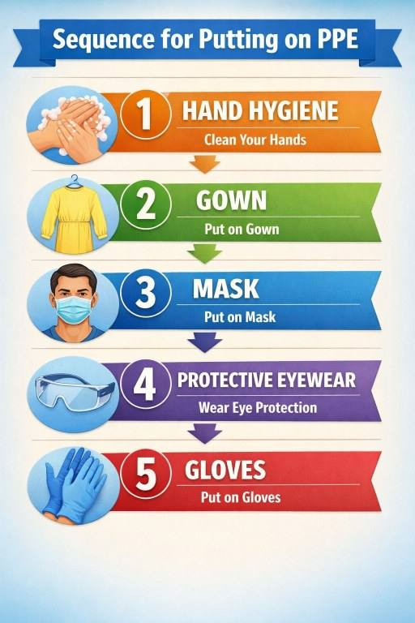
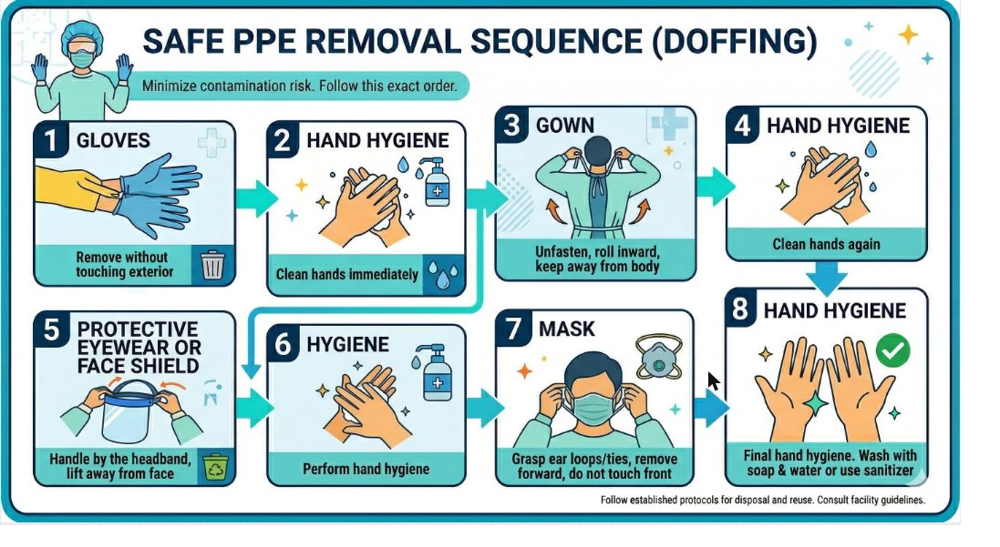

HLTINF006 / HLTWHS002 · Lesson 4
Practical skills day
What happens on the day, what you must show, and how to fill in every form.
Three lessons of theory become one day of doing. On the practical day you walk through a home looking for hazards, write them up, present one to a WHS meeting, and then handle an emergency with Davis Butler, who has gastro and has just fallen. This page tells you what to expect and what the assessor is watching for. Read it before the day, and keep it open on the day.
1 How the day runs
The practical assessment (AT2) has two parts. Part 1 is a workplace inspection, done in groups. Part 2 is a workplace emergency. The day starts with a demonstration so you see the skills before you use them.
- L4 S1 P11. Demonstration. Your teacher shows PPE going on and coming off, opens the spill kit, and walks through the steps for cleaning up a spill such as vomit. Watch closely: you do all of this yourself later in the day.
- L4 S1 P22. The practical room. When your group walks in, Davis Butler (played by a classmate) is on the floor. He has gastro and has fallen. Look after him first: check him, keep him safe, then talk him up from the floor onto a chair, step by step, as you would with a person who has a little dementia. Then inspect the room with the printed Environmental Assessment checklist from your assessment. Hazards have been set up in the room. Find them all, and note any real hazards you see as well.
- L4 S1 P33. Kitchen and toilets. Your group then inspects the kitchen in the other block and the campus toilets, looking for real hazards, and adds them to the checklist.
- L4 S1 P44. Group paperwork. Back in the classroom, the group works together on the forms: the inspection checklist, Section 1 of the Hazard Form for the one hazard that cannot be eliminated, the Risk Assessment Form with three strategies, and for Davis an incident form and a progress note. While you write, the next group is in the practical room.
- L4 S1 P5The group rule: the group passes together. If one person's paperwork is not complete, the group is not finished. Help each other. That is the collaboration part of the assessment.
- L4 S1 P65. Safety meeting. The whole class meets. One person takes the notes on the meeting template. Each group reports the hazards it found and the controls that were put in place. The notes go into OneNote, and everyone uploads a copy with the assessment in Connect.
- L4 S1 P76. Debrief. A conversation with your supervisor (a classmate) about the WHS issues you saw and how you felt looking after Davis.
- L4 S1 P8What to wear and bring: respectful clothing, closed shoes, no jewellery, no long or artificial nails, long hair tied back, and a pen.
- L4 S1 P9Safety rules on the day: follow the teacher's directions, respect privacy and other students' turns, control hazards as you go, leave the area tidy, report any damage, and no photos or videos. You get two attempts.
2 Before the demonstration: hands
Every other skill on the day starts and ends with your hands. Check your hands before the demonstration starts, and use the sink whenever you need it.
- L4 S2 P1Routine hand wash, steps 0 to 11, 20 to 30 seconds. Step 0 is wet your hands first. Go back to [Lesson 2, section 6](2-standard-precautions.html#s6) if you need the steps.
- L4 S2 P2Alcohol-based hand rub: cover every surface and rub until dry, about 20 seconds. [Lesson 2, section 7](2-standard-precautions.html#s7).
- L4 S2 P3Gastro changes the rule. The viruses that cause gastroenteritis are not reliably killed by hand rub. In the Davis scenario, use soap and water after any contact with Davis, the bowl, the linen or the surfaces.
- L4 S2 P4Glow gel check: rub the gel in, wash as normal, then hold your hands under the UV lamp. The glowing patches are the spots you missed. Thumbs, fingertips and the backs of the hands are the usual ones.
- L4 S2 P5Before you start, check yourself: bare below the elbows, no rings, no watch, nails short, no polish, cuts covered with a waterproof dressing.
3 The demonstration: PPE and the spill kit
Your teacher demonstrates first. Watch the PPE go on and off, then the spill kit. Davis has a diagnosed infection, so standard precautions are not enough: for gastro you add contact precautions, and droplet precautions while he is vomiting.
- L4 S3 P1What to wear for Davis: gloves, a gown or waterproof apron, a surgical mask, and eye protection (vomit splashes). Put it on before you go into the room, and take it off before you leave.
- L4 S3 P2On, 1 to 5: hand hygiene, gown, mask, eye protection, gloves. [Lesson 2, section 14](2-standard-precautions.html#s14).
- L4 S3 P3Off, 1 to 8: gloves, hand hygiene, gown, hand hygiene, eye protection, hand hygiene, mask, hand hygiene. The dirtiest item comes off first, and hands are cleaned between every item.
- L4 S3 P4Say it as you do it. The assessor must see each step. "Gloves off, hand hygiene, gown off, hand hygiene..." out loud is not strange, it is professional.
- L4 S3 P5Used PPE goes in the waste bag in the dirty zone, not on the bed, not on the trolley.
- L4 S3 P6The spill kit: gloves, apron, mask and eye protection; absorbent granules (clumping agent); a disposable scraper and pan; waste bags or a sealed container; detergent and sodium hypochlorite (bleach) solution or wipes; paper towel; a sign or barrier. Check it is complete before you need it.
- L4 S3 P7Spill clean-up, steps 1 to 8 ([Lesson 2, section 16](2-standard-precautions.html#s16)): PPE on; cover the spill with absorbent granules and wait; scrape and scoop into the pan; everything into a sealed bag; discard as clinical waste; mop with detergent; wipe with bleach solution and let it dry; hand hygiene. You will use these steps on the vomit you find in the room.


Put the eight steps in order.
4 Part 1: the hazard hunt and the inspection checklist
Your group walks the practical room, then the kitchen and the toilets, with the printed Environmental Assessment checklist. Tick Yes or No for every item. The comment column is where the marks are.
- L4 S4 P1The form is grouped by area: outside (parking, gates, paths, steps, pets, lighting), electrical and gas, equipment (vacuum, mop, iron, washing machine, hot water), bathroom, kitchen, laundry, bedrooms, lounge, hazardous substances, and other issues (aggression, infection risk, manual handling).
- L4 S4 P2Yes means the item is safe or in order. No means there is a hazard or something missing. Read each line carefully: "Pets present, restrained" with a dog running loose is a No.
- L4 S4 P3Every No needs a comment: what you saw, and the action to manage it. "Cracked path from tree roots, uneven, trip hazard. Rope off, get landscaper quotes."
- L4 S4 P4Write a comment for a Yes too when it adds something useful: "Vacuum supplied by staff", "No gas on the premises".
- L4 S4 P5Look for the hazards that are easy to miss: lighting on the path at night, a light switch that has to be jiggled, a heater near bedding, cleaning products not in their original bottle, the hot water temperature.
- L4 S4 P6Fill in the top of the form: address, phone, your name, date, which door you enter by.
- L4 S4 P7In the practical room: hazards have been set up for you. Look high and low, on surfaces, on the walls, in the bathroom. Deal with each one the safe way as you find it: a spill is cleaned with the spill kit in PPE; a sharp goes into the sharps container with tongs or a scoop, never fingers; anything you cannot fix is reported, not ignored. Say what you found and what you did, so your group can write it down.
- L4 S4 P8In the kitchen and toilets: these are real workplaces. Look for the everyday hazards: wet floors, cords, cluttered walkways, chemicals, hot water, broken fittings, missing signs, bins, hand washing facilities. Do not touch other people's food or belongings.
How would you tick these lines?
5 The hazard form and the risk matrix
From your inspection, your group chooses one hazard that cannot simply be removed on the spot: something that needs a tradesperson, money or management to fix. A loose rug can be picked up, so it is a poor choice.
- L4 S5 P1Section 1 of the Hazard Reporting Form is yours: your name, date and time; a description and location of the hazard (the area, the task, the equipment or people involved); and actions you suggest or have already taken.
- L4 S5 P2Then score it on the risk matrix. Go down for probability (how likely it is to hurt someone: rare, unlikely, moderate, likely, highly likely) and across for severity (how bad: very small, minor, moderate, major, catastrophic). The cell gives Low, Medium or High.
- L4 S5 P3Medium or High means act now. Write the score in the box.
- L4 S5 P4The bottom of the form (action taken, score after action, close-out signatures) belongs to the person responsible for fixing it. You only complete Section 1 on the day.
- L4 S5 P5Example: cracked path used many times a day by an older person at night, with poor lighting. Probability highly likely, severity major (a fall could mean a broken hip). Score: High.
| Probability ↓ Severity → | Very small | Minor | Moderate | Major | Catastrophic |
|---|---|---|---|---|---|
| Rare | Low | Low | Low | Medium | Medium |
| Unlikely | Low | Low | Medium | Medium | Medium |
| Moderate | Low | Medium | Medium | Medium | High |
| Likely | Medium | Medium | Medium | High | High |
| Highly likely | Medium | Medium | High | High | High |
Use the matrix above.
6 The risk assessment form: three ways to lower the risk
The risk assessment form takes the same hazard and goes deeper. The important box is the last one: three control strategies.
- L4 S6 P1Fill in: date, your name, the hazard description, the potential effects (what could happen: trip and fall, electric shock, burn), who is at risk (the person, staff, visitors, family), how often people are exposed, severity, likelihood, and the risk level.
- L4 S6 P2Three control strategies, and make them different levels of the hierarchy of control ([Lesson 3, section 4](3-work-health-and-safety.html#s4)). For the cracked path: isolate it (rope off, signs, a temporary mowed path), engineer a fix (landscaper removes the root, path re-laid), and engineer the lighting (sensor light) or administer it (daytime visits only until fixed).
- L4 S6 P3A strategy says who does what, by when: "Three landscaper quotes this week, best quote engaged as soon as possible."
- L4 S6 P4Avoid strategies that only say "be careful" or "tell the person". They are administrative controls at best, and they do not lower the risk much on their own.
- L4 S6 P5Sign it and set a review date.
Tap a strategy, then tap its level in the hierarchy.
7 The safety meeting: report, record, upload
When every group has finished the hunt and the paperwork, the whole class holds a safety meeting. This is what a real Health and Safety Committee does: workers report, the record is kept, actions are assigned.
- L4 S7 P1Roles: your teacher chairs. One student takes the notes on the meeting template. Everyone else reports. Decide the note taker before the meeting starts.
- L4 S7 P2Download the template: [WHS Meeting Notes Template (Word)](WHS_Meeting_Notes_Template.docx). It has the meeting details, attendance by group, a table for every hazard reported, a section for the hazards that could not be eliminated, other matters, an action list and the close.
- L4 S7 P3Each group reports, hazard by hazard: what and where, the risk score from the matrix, the control put in place and its level in the hierarchy, and any further action still needed, with who and by when. The note taker writes one row per hazard.
- L4 S7 P4The hazard that could not be eliminated gets its own row in section 5: the three strategies from your Risk Assessment Form, who is responsible, and the interim control until it is fixed.
- L4 S7 P5Participate. Ask one question or add one control when another group reports. The assessor is listening for your voice.
- L4 S7 P6After the meeting: the note taker saves the file to the class OneNote. Every student uploads a copy of the meeting notes with their AT2 assessment in Connect. No notes uploaded, no evidence that you attended.
8 Part 2: Davis Butler has fallen
Davis Butler has had two days of nausea, vomiting and cramps. His GP has diagnosed viral gastroenteritis and staff have been told to use additional precautions. He has been vomiting into a bowl on the edge of his bed. His eyes close, he goes limp, and he slides onto the floor. When your group walks into the practical room, that is where you find him.
- L4 S8 P1Two versions, one story: in the aged care version Davis is 83 and lives at home with community support; in the disability version he is 30 and lives in a Supported Independent Living house. Your teacher tells you which one you are doing.
- L4 S8 P2First minutes: check for danger to you (vomit on the floor, the bowl, the bed), check if he responds, put him in the recovery position, call the ambulance (000), and call your coordinator or supervisor. Stay with him and keep talking to him.
- L4 S8 P3When he comes round he is confused and wants to get up. Do not pull him up. Check him first: any pain, anywhere he cannot move, any bleeding, hit his head? If he is hurt, he stays on the floor, warm and comfortable, until the paramedics check him.
- L4 S8 P4If he is not hurt and the coordinator agrees, help him up without lifting him. Davis does the work, you guide and steady. Talk him up, one step at a time, as you would with a person who has a little dementia: his name first, short simple words, one instruction, wait, repeat if needed, praise each step.
- L4 S8 P5The floor-to-chair steps: 1 bring a sturdy chair close; 2 "Davis, roll onto your side towards me"; 3 "Push up onto your hands and knees"; 4 "Crawl to the chair and put your hands on the seat"; 5 "Bring your strong foot forward, flat on the floor"; 6 "Push up with your hands and your leg" (you steady him at the hips, you do not lift); 7 "Turn, feel the chair behind your legs, sit down". Then check him again and stay with him.
- L4 S8 P6No lifting from the floor, not under the arms, not by the hands. If he cannot get up this way, he waits on the floor for the paramedics. (The hoist comes in a later practical day.)
- L4 S8 P7Say the hazards out loud as you see them: "Vomit on the floor, slip risk, I will go around it." "The table is in the way, I will move it before he crawls." "I am keeping my back straight and my knees bent." The assessor needs to hear you identify hazards, not just avoid them.
- L4 S8 P8Scope of practice: you do first aid and comfort, you report, you clean. You do not diagnose, you do not give medication, and you do not decide whether he goes to hospital. Be ready to explain who does what: the GP, the paramedics, the coordinator, the cleaner, you.
Put the steps in order.
Put the seven steps in order.
9 Cleaning up after gastro: zones, spill, bowl, surfaces
Once Davis is safe on the chair, the coordinator asks you to clean up while you wait for the ambulance. Vomit has splashed on the floor, the table and the furniture. This is the infection control part of the assessment, and it is also a manual handling task.
- L4 S9 P1Set up the zones first. Decide out loud what is clean (trolley top, fresh linen, your notes) and what is dirty (bowl, soiled linen, used PPE, waste bag, the splashed floor and table). Nothing goes from dirty to clean without hand hygiene in between.
- L4 S9 P2PPE on before you touch anything: gloves, gown or apron, mask, eye protection.
- L4 S9 P3The spill, steps 1 to 8 ([Lesson 2, section 16](2-standard-precautions.html#s16)): PPE; cover with absorbent agent; scrape and scoop into the pan; everything into a sealed bag or container; discard; mop with detergent; wipe with sodium hypochlorite (bleach solution) and let it dry; hand hygiene.
- L4 S9 P4The vomit bowl: empty into the toilet, not a hand basin; wash with detergent and hot water; disinfect or send for reprocessing according to procedure; let it dry. It is semi-critical if it touches mucous membranes, so check the workplace procedure.
- L4 S9 P5Surfaces: detergent first, then disinfectant, on everything splashed: table, bed rail, floor. Work from clean to dirty and from top to bottom. A fresh cloth for each area.
- L4 S9 P6Protect your back while you clean: move the table instead of reaching under it, kneel on one knee instead of bending from the waist, use a long-handled mop, and ask for help with the furniture. Say what you are doing and why.
- L4 S9 P7Hands last: PPE off in order, then soap and water, not just rub, because it is gastro.
Tap an item, then tap the zone it belongs in.
10 The paperwork: incident form and progress note
Two documents, two jobs. The incident form tells the organisation what happened. The progress note tells the next worker what happened to Davis.
- L4 S10 P1Incident, injury, near miss and illness record: Davis's details (name, date of birth, address); the circumstances in order (sitting on the bed vomiting, put the bowl down, eyes closed, went limp, slid to the floor, no response); products or structures involved (nil, or the bed); location, time, date, witness (you); nature of injury (tick what applies, or none found); the illness section (diagnosed viral gastroenteritis, additional precautions in place); action taken (recovery position, stayed with him, comfort, ambulance called, coordinator called); medical personnel contacted: Yes, ambulance; your name, signature, the time and date you wrote it; and the notifications you made (coordinator, next of kin, with times).
- L4 S10 P2Progress note: date and time (24-hour clock), then what you saw and did, in order, in plain words, with no opinions: "Davis sat on the side of the bed and vomited a moderate amount into the bowl. He placed the bowl on the table, closed his eyes, went limp and slid to the floor. He did not respond to voice. Placed in recovery position. Ambulance and coordinator called. Began responding after a few minutes. Vomit bowl and table cleaned. Taken to hospital by ambulance." Then your name, role and signature.
- L4 S10 P3Industry standard means: facts not feelings, times, full names, no blank boxes (write "nil" or "N/A"), black pen, a single line through any mistake with your initials, and written as soon as possible after the event.
- L4 S10 P4Write the note from the clean zone, with clean hands, after the clean-up is finished.
Which line belongs in a progress note?
11 The debrief: report the WHS issues, and say how you are
The last task is a conversation with your supervisor (another student plays the role). It has two halves, and the assessor needs to hear both.
- L4 S11 P1Half one, the WHS issues. List the hazards and risks you saw: the fall itself, vomit on the floor (slip), the infection risk to you and others, the awkward postures while cleaning, working alone, anything about the room or equipment. Say what you did about each one and what should change.
- L4 S11 P2Half two, you. How did it feel while it was happening, and how do you feel now? Racing heart, shaky hands, calm until afterwards, worried you did the wrong thing: all normal. Name it. Then say what you will do to look after yourself ([Lesson 3, section 11](3-work-health-and-safety.html#s11)): a break, a chat with a colleague, a walk, sleep, and who you would go to if it stayed with you.
- L4 S11 P3If you are the supervisor: ask open questions. "Talk me through what happened." "What worried you most?" "What would make it safer next time?" "How are you feeling now?" Listen more than you talk.
- L4 S11 P4This is the part students skip because it feels soft. It is an observation criterion. Reflecting on your own stress is part of safe work.
12 Before you leave
A last check so nothing is missed.
- L4 S12 P1Part 1 handed in: Environmental Assessment (every line ticked, every No commented), Hazard Form Section 1 with the matrix score, Risk Assessment Form with three strategies, and you presented at the meeting.
- L4 S12 P2Part 2 handed in: Incident form (no blank boxes) and progress note (time, facts, signature) for Davis, and you did the debrief.
- L4 S12 P3The room: clean, tidy, equipment back, waste bagged, hands washed.
- L4 S12 P4You: the assessor has given feedback. If anything is not yet satisfactory, you know what it is and when your second attempt is.
Well. That was a terrible day for me. Zones, bleach, soap and water, hands washed eleven times. I did not get into a single person. I am going to go and sit in a sponge somewhere and think about my choices.
Gerry the Germ
"The standard you walk past is the standard you accept." Today you did not walk past anything. Take that habit onto placement, and take care of the carer too. See you on the floor.
Dottie the Drop
End of the cluster. Gerry has gone to sit in a sponge. Dottie is proud of you.